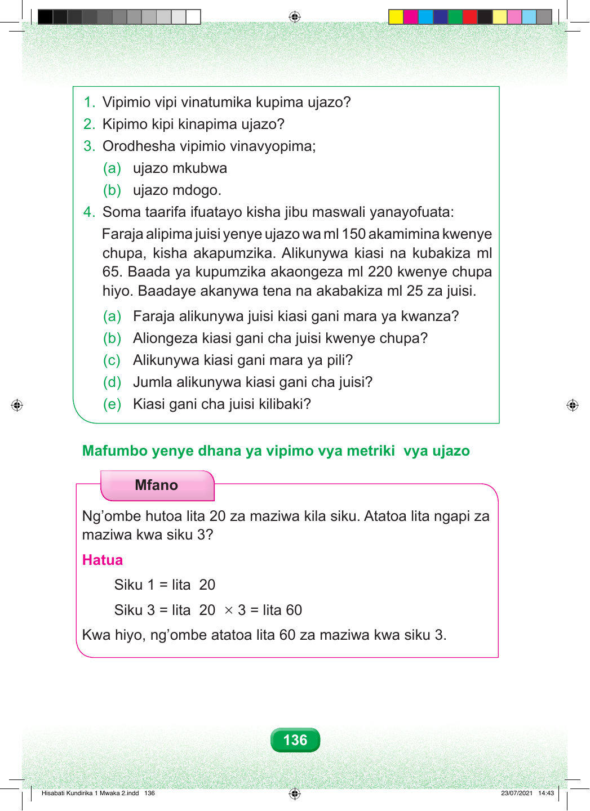

1. Vipimio vipi vinatumika kupima ujazo? 2. Kipimo kipi kinapima ujazo? 3. Orodhesha vipimio vinavyopima; (a) ujazo mkubwa (b) ujazo mdogo. 4. Soma taarifa ifuatayo kisha jibu maswali yanayofuata: Faraja alipima juisi yenye ujazo wa ml 150 akamimina kwenye chupa, kisha akapumzika. Alikunywa kiasi na kubakiza ml 65. Baada ya kupumzika akaongeza ml 220 kwenye chupa hiyo. Baadaye akanywa tena na akabakiza ml 25 za juisi. (a) Faraja alikunywa juisi kiasi gani mara ya kwanza? (b) Aliongeza kiasi gani cha juisi kwenye chupa? (c) Alikunywa kiasi gani mara ya pili? (d) Jumla alikunywa kiasi gani cha juisi? (e) Kiasi gani cha juisi kilibaki? Mafumbo yenye dhana ya vipimo vya metriki vya ujazo Mfano Ng’ombe hutoa lita 20 za maziwa kila siku. Atatoa lita ngapi za maziwa kwa siku 3? Hatua Siku 1 = lita 20 Siku 3 = lita 20 × 3 = lita 60 Kwa hiyo, ng’ombe atatoa lita 60 za maziwa kwa siku 3. 136 Hisabati Kundirika 1 Mwaka 2.indd 136 23/07/2021 14:43